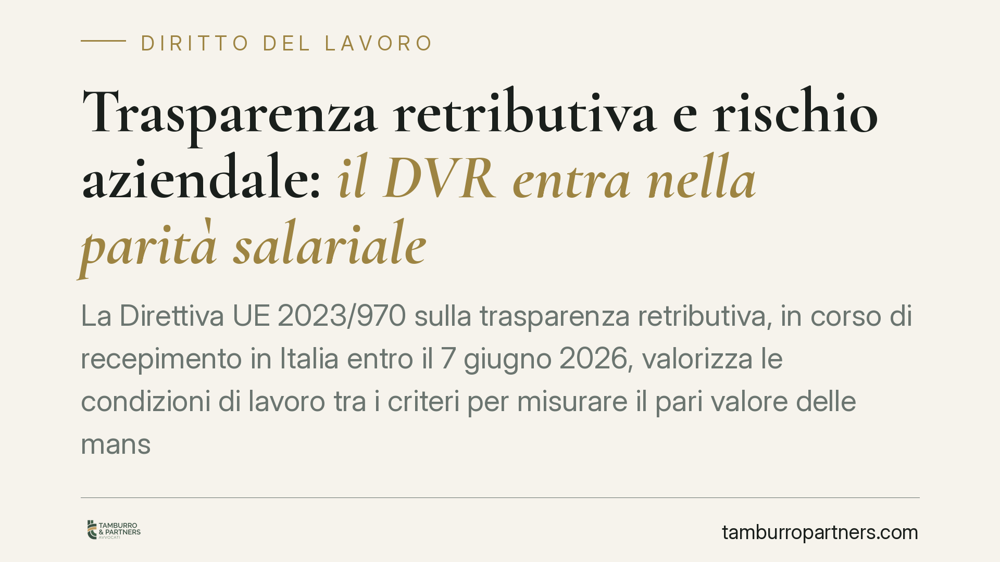

Trasparenza retributiva e rischio aziendale: il DVR entra nella parità salariale
La Direttiva UE 2023/970 sulla trasparenza retributiva, in corso di recepimento in Italia entro il 7 giugno 2026, valorizza le condizioni di lavoro tra i criteri per misurare il pari valore delle mansioni. Un principio che avvicina la valutazione dei rischi aziendali alla determinazione delle retribuzioni. Vediamo perché conta e cosa possono fare le aziende sin da ora.

Il quadro: una riforma ancora in cantiere
Una premessa doverosa. La Direttiva (UE) 2023/970 sulla trasparenza retributiva è in corso di recepimento: gli Stati membri devono adottare le norme di attuazione entro il 7 giugno 2026. Alla data di questo contributo, il decreto legislativo italiano non risulta ancora pubblicato in Gazzetta Ufficiale. Trattiamo quindi la materia in chiave prospettica, senza attribuire numeri o articolati puntuali a un testo non ancora vigente.
Quanto segue è, di conseguenza, una lettura dei principi europei e delle probabili ricadute sull'ordinamento interno, non un commento a norme già in vigore.
Inquadramento normativo
Il principio di parità retributiva ha radici solide. L'art. 37 della Costituzione riconosce alla lavoratrice gli stessi diritti e la stessa retribuzione spettanti al lavoratore, a parità di lavoro. Sul piano europeo, l'art. 157 TFUE sancisce il diritto alla parità di retribuzione per uno stesso lavoro o per un lavoro di pari valore.
La Direttiva 2023/970 rafforza questo impianto. Impone criteri oggettivi e neutri sotto il profilo del genere per valutare il "pari valore" delle mansioni. Tra questi criteri figurano le competenze, l'impegno, le responsabilità e le condizioni di lavoro. È proprio l'ingresso delle condizioni di lavoro tra i parametri a creare un ponte con la disciplina della sicurezza.
La valutazione dei rischi, infatti, è già oggi il cuore degli obblighi datoriali. Il Documento di Valutazione dei Rischi (DVR), previsto dagli artt. 17 e 28 del D.lgs. 81/2008, deve considerare tutti i rischi, compreso lo stress lavoro-correlato espressamente richiamato dall'art. 28. Se le condizioni di lavoro diventano criterio di misurazione del valore di una mansione, il DVR può fornire una base documentale già esistente per apprezzarle.
È un collegamento interpretativo, non un automatismo di legge. Lo segnaliamo come chiave di lettura utile, non come dato normativo consolidato.
Perché conta
Il punto sensibile riguarda lo sforzo psicosociale. Molte mansioni ad alto carico emotivo e relazionale — si pensi ai ruoli di cura nelle aziende sanitarie, statisticamente a prevalenza femminile — sono state storicamente sottovalutate nei sistemi di classificazione. Il carico fisico si vede e si misura; la fatica psichica di gestire relazioni, urgenze e sofferenza altrui resta spesso invisibile nelle griglie retributive.
Valorizzare le condizioni di lavoro, e con esse lo stress lavoro-correlato, significa dare peso economico a fattori finora trascurati. È qui che la trasparenza retributiva può incidere concretamente sul divario di genere.
Le soglie dimensionali previste dalla Direttiva
La Direttiva introduce obblighi di rendicontazione sul divario retributivo di genere calibrati sulla dimensione aziendale. Secondo il testo europeo, con la cautela dovuta finché il recepimento italiano non fisserà le date interne:
- le imprese con almeno 250 dipendenti rendicontano annualmente, con avvio previsto dal 2027;
- quelle con 150-249 dipendenti rendicontano ogni tre anni, sempre a partire dal 2027;
- quelle con 100-149 dipendenti rendicontano ogni tre anni a partire dal 2031.
Le soglie e le scadenze definitive per l'Italia dipenderanno dal decreto di recepimento.
Implicazioni pratiche
Per il datore di lavoro cambia la prospettiva. Non basterà evitare discriminazioni dirette: occorrerà dimostrare che i criteri di classificazione e retribuzione siano oggettivi, neutri e coerenti con l'effettivo contenuto delle mansioni, condizioni di lavoro comprese.
Per il dipendente si aprono strumenti di trasparenza: diritto di informazione sui criteri retributivi e sui livelli medi, articolati per genere. Uno squilibrio non giustificato diventerà più difficile da mascherare.
Cosa fare in concreto
- Verificate la coerenza tra il sistema di classificazione professionale e i criteri di pari valore: competenze, impegno, responsabilità e condizioni di lavoro.
- Rileggete il DVR alla luce dello stress lavoro-correlato (art. 28 D.lgs. 81/2008): la documentazione già esistente può servire a valorizzare lo sforzo psicosociale delle mansioni.
- Mappate gli organici per fascia dimensionale, così da individuare per tempo se e quando scatteranno gli obblighi di rendicontazione.
- Predisponete un'analisi interna del divario retributivo di genere, per anticipare eventuali criticità prima delle scadenze di legge.
- Monitorate la Gazzetta Ufficiale: appena pubblicato il decreto di recepimento, aggiornate policy e sistemi retributivi sul testo definitivo.
Disclaimer
Contributo informativo a cura di Tamburro & Partners - Avv. Giuseppe Tamburro. Non costituisce parere legale.
Ogni storia di lavoro ha i suoi tempi.
Se gestisci HR e vuoi un confronto su contenzioso, ispezioni o licenziamenti, scrivi allo studio. Ti rispondiamo entro un giorno lavorativo.